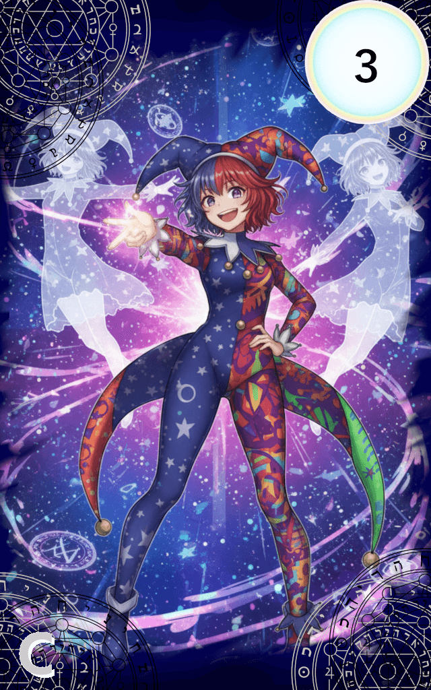

073_幻影創造-ドッペル・クリエイター-

レアリティ: コモン (C)
幻影創造-ドッペル・クリエイター-
クラス: セフィル・イェツィラー
コスト:3
タイミング:好きなタイミング
効果:
《セフィロト・コードセフィロト・コード : 装備によりステータス上昇やパッシブ効果を得ます。
攻撃スキルを受けると破損判定が発生し、破壊されるリスクを伴います。》
ATK : 0 DEF : -2
[破損耐性ナンバー]4,5,6※破損判定の際にこの数字以外の出目が出た場合は破壊される。
装備時、装備者の支援スキルを発動する。
《破損時効果》
あなたは1点のエーテルを得る。
《セフィロト・コードセフィロト・コード : 装備によりステータス上昇やパッシブ効果を得ます。
攻撃スキルを受けると破損判定が発生し、破壊されるリスクを伴います。》
ATK : 0 DEF : -2
[破損耐性ナンバー]4,5,6※破損判定の際にこの数字以外の出目が出た場合は破壊される。
装備時、装備者の支援スキルを発動する。
《破損時効果》
あなたは1点のエーテルを得る。
「さぁ！パーティの始まりさ！」